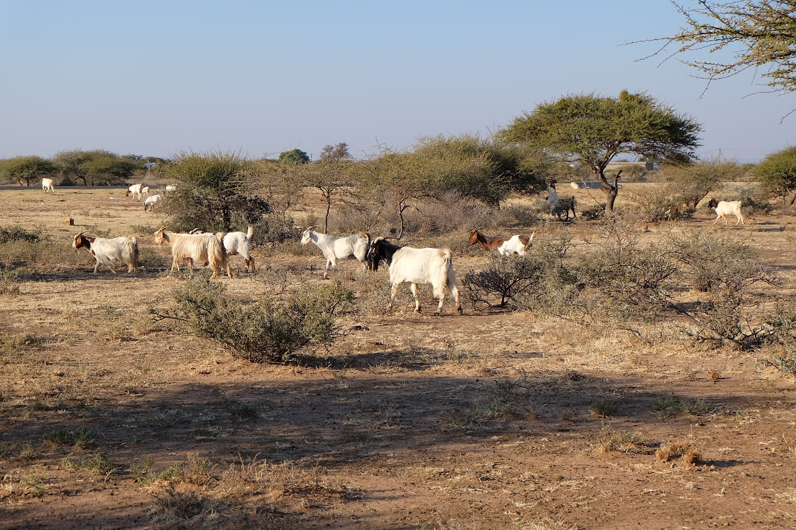

Live → Blog
September 10, 2019

Yesterday I came across a Facebook post from one of the people who I like to humor myself with having created an example for, on how it is possible to come from a low ranking school like Seepapitso Senior and study abroad without the assistance of the Government of Botswana. (Surprise: I have created a Facebook account after 9 months. I will probably write a reflection on that over the next month or so). Like me, he went from Seepapitso Senior to UWC Costa Rica and then to a college in the US. Given the similarity of our experiences, I felt qualified to comment on his post and hopefully share some wisdom. He had posted:
"I have been reflecting on 21st birthday for a while and it so interesting to see bittersweet life seems to be. I spend a lot of time thinking of the people I used to know at some point in my life and how a lot of them have just gone up in smoke, people I miss from home, friends I haven't seen in ages— but sometimes I find myself missing my former self more than the people I was once close to. At times I think an abitious, happy, creative part of me is just drifting away and I want to do something about before get to see it all fade into the dark. But I also feel like the last 5 years of my life have been so wonderful, a testimony of dreams coming true. Anyone else ever feel that way or is it just me?"
My response was:
"I think I have felt similarly at certain points. Growing up in Kanye, from very humble beginnings, my ambition revolved around escaping my family's poverty and having a better standard of living. I wanted a life where I did not worry if I would have food to eat, but to debate which of the many options I wanted to have. Because we were socialized into believing education was the key to success, I put in all my energy into school. Since my family did not have access to electricity, I studied by candle light or with a paraffin lamp. Sometimes walking all the way from Thamatlhogo to Caltex to buy paraffin when there were supply issues. Because life was tough then, it is easy to see how then there was evidence of my ambition. In senior school, I went to school every single day to study with Akon Mopati Wabobi and my other friends. We went to a terrible school, under resourced, with teachers and students lacking in morale. So we had to work harder. So then it felt like I was more ambitious than I felt later, more ambitious than I feel now. Then of course all the hard work "paid off". I went to UWC Costa Rica, and to Stanford. But in these institutions I was relatively better off than I was before. I did not need to worry about whether I will have food or not, I had access to electricity and the internet, so studying was very easy. I also had the privilege to study alongside exceptional students, with driven instructors. It is not that I was any less ambitious, or that I worked any less. But because I had more resources at my disposal, how that looked was a bit different. Of course with an increased access to the internet, there are also new forms of leisure. So in that sense, the decreased creativity makes sense. You are passing your time in other ways. I am not saying those ways are better, just that they are different. (But of course my ambition has undergone various transformations over the years from just wanting to escape my family's poverty. After UWC Costa Rica and their social responsibility preach, Stanford's make an impact in the world, and MasterCard Foundation's give back, my ambition first evolved to want to do more for the world, especially in Botswana. But recently, it has evolved again as I recognized that before I can change the world, I have to take care of me. So it is back to seeking personal success as a means to reaching a position where i can begin to effect change in the world). Lastly, keeping a journal has helped me keep the creative side of me alive. But more than that, having a website where I share my creativity with the world has been motivation enough to keep that side of me alive. I hope my testimony helps you realize that perhaps the meaning of ambition, happiness, and creativity, has simply evolved with the transformation of your life circumstances. I also wish you all the best in cultivating creativity again. I will stop here before I write a Wikipedia article."
The more I think about it, the more I realize the truth in my response. In essence my motivation has gone from being entirely selfish to being unrealistically selfless, and is now trying to find some equilibrium somewhere between those two extremes. The younger me wanted to eat meat on most days, snack on fruits anytime, have his own bedroom, and have electricity. With the naivety of youth, I had some resentment towards my parents for not being wealthy. If education was the key to success, and hard work paid, then why were they poor. So my ambition then was simply and purely about saving myself. Not only did I work hard so I can escape poverty in a future time, I also occupied all my free time with extra-curricular activities so I minimized the time I spent at home. In fact, most of my childhood friends could not tell you where I lived because I hid my home life out shame. Over time, my consciousness awakened to the complex systems that create and sustain poverty. In the case of my parents, the social norms that boxed my father into being the sole provider of the family and my mother into being just a housewife are responsible for the poverty in which I grew up.
My academic excellence and extensive extra curricular portfolio scored me a place at the United World College of Costa Rica. One of the values that were drilled down into heads and hearts was Social Responsibility. It is a value I found myself gravitating towards. In fact upon graduation, I was awarded the Social Responsibility Award. Then I was proud of the achievement, but today I find it amusing that being socially responsible is something that gets awarded. After UWC, I went to Stanford on a MasterCard Foundation Scholarship. This means I was bombarded with messages on how I was a transformative leader and was going to make an impact in the world. In fact, I internalized Jane Stanford's famous quote about how a Stanford education was given to me in the hopes that I will be of greater service to the public. But as I have made the most of the opportunities at my disposal to try and make an impact in the world, from California to Botswana to Sri Lanka and elsewhere, I have come to the sobering realization that while making an impact matters, we should not approach it as though we are an elite class that is better than those we seek to serve. The world does not need saving. It is from such a place, that I took an audit of where my life was headed: on autopilot on some transformative leadership and impact path. That audit revealed to me that before I can serve the world, I have to take care of me.
What does it mean to take care of me? I want to have adequate nutrition and sufficient sleep, to have in spacious and love filled accommodations, and be financially secure. I am curious about technology and the ways in which it can help people organize more efficiently. I know that is a vague statement that can mean many things — and in fact it does mean many things. So the state of my ambition at the moment is to graduate from Stanford with my Masters, get a challenging and well paying job in the US for the 3 years of my OPT, and hope that when 2024 comes, I would have taken care of myself enough. At that point, the hope is, I will then cross the Atlantic in pursuit of community living. It is in community living that I hope I would be able to make an impact in the world, by playing my role alongside the many other members of that community that I dream to find.
← Return to Blog